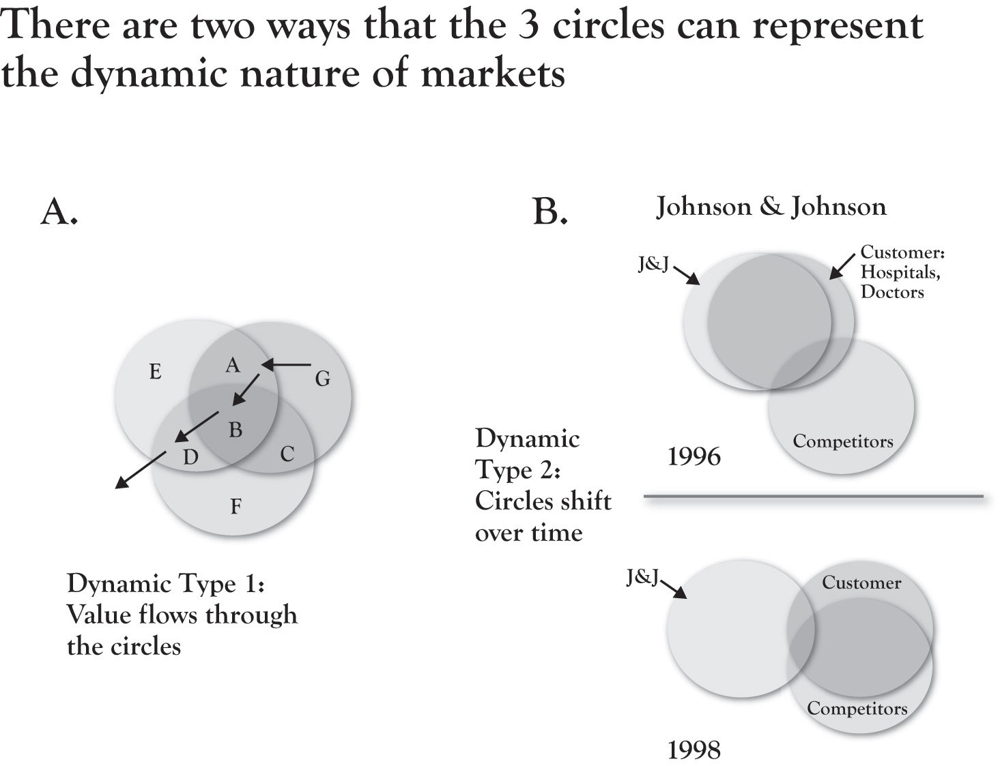

In previous chapters, there has been a strong theme of value dynamics. Beginning in Chapter 2 "Introduction to 3-Circle Analysis", we showed how movement of the circles could illustrate commoditization. Integral to Chapter 4 "The Meaning of Value" was a discussion of key lessons about attributes and benefits that can evolve from differentiators to parity to nonvalue, while Chapter 6 "Growth Strategy" presented a way to think about growth strategy as value shifting between different areas of the model. Here, we review the two general types of dynamics that provide some diagnostic value for anticipating future behavior in the market.
A key point throughout the earlier chapters is that one can think of attributes and benefits as having different roles over time. While this is not a new idea it is embedded in the work of Kano (1995) and Gale (1994), it is an idea that is not really captured in a life-cycle flow in other models. Figure 8.1 "Market Dynamics in 3 Circles" (part A) shows what we might expect to be a typical flow of value in a market. New ideas or innovations, like the stent, emerge by providing new technology or methods for better resolving unmet needs. Once developed and commercialized, such innovative attributes become a firm’s Area A. So J&J initially had a near monopoly on stent sales with a distinctive Area A. Yet competitive imitation pushes once-distinctive attributes and benefits into Area B, where they become, at best, points of parity. In fact, continuing the path, one can see that for many patients, doctors would prefer new, flexible stents, suggesting that the bare-metal stent (although still on the market) may, for many situations, fall into Area D or even out of the model, that is, not even in the consideration set for certain procedures.
If we think of an attribute life cycle, we might consider that attributes or benefits similarly pass through different phases of introduction, growth, maturity, and decline, as reflected in the classic product life cycle theory. As noted, the original one-size, inflexible, bare-metal stents quickly lost favor and gave way to more flexible stents. But the market kept moving quickly from there. When it was discovered that there could be a build-up of scar tissue around an implanted stent over time, J&J once again innovated in creating a drug-eluting stent that provided for the timed-release of blood-thinning drugs to prevent clotting. However, Boston Scientific has fought J&J for this business, with market share going back and forth, along with lawsuits over patent challenges. Different types of drugs (e.g., transplant drugs vs. cancer drugs) have been used for drug-eluting stents, further increasing the variation in offerings. Stent manufacturers and vascular specialists have discovered other stent applications as the category has evolved. Fighting 700,000 strokes a year, stents for the carotid artery have been developed, credited with significant improvement in stroke prevention and reducing the need for surgery. Nonvascular stents have been developed for clearing blockages in kidneys, intestines, and lungs. Each of these value-added variations occupies a different place in the 3-Circle model for a given manufacturer, depending on the relative uniqueness of its offering relative to competitors.
Figure 8.1 Market Dynamics in 3 Circles
One of the most useful and powerful ways the 3-Circle graphics can convey the implications of thoughtful customer and competitor research (and subsequent action) is in the conceptual meaning behind the movement of the circles. There are three basic types of movements:
Referring back to Figure 8.1 "Market Dynamics in 3 Circles", part B demonstrates the shift in circles capturing J&J’s decline in the stent market in 1996 through 1998. Our post-hoc interpretation of this unusual situation is straightforward. The combination of new competitive offerings that effectively met customers’ developing needs and built up resentment toward J&J for perceived price gouging and nonresponse on new product development led to a situation in which the competitor’s circle essentially took over the customer’s circle while pushing J&J nearly out of the picture.